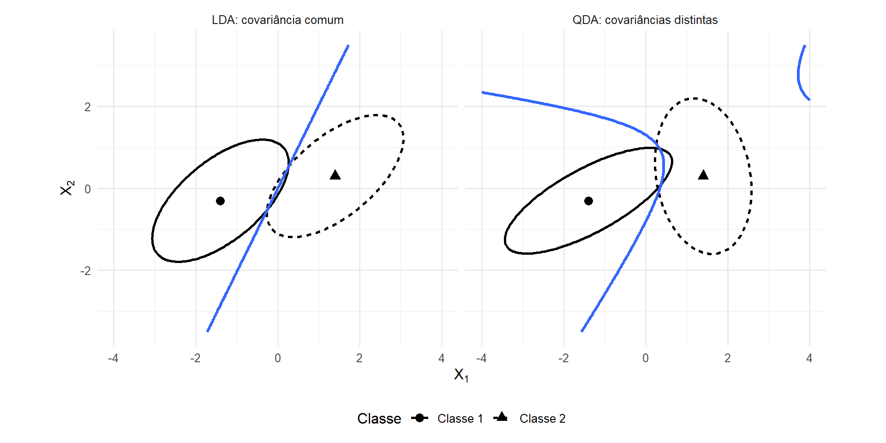
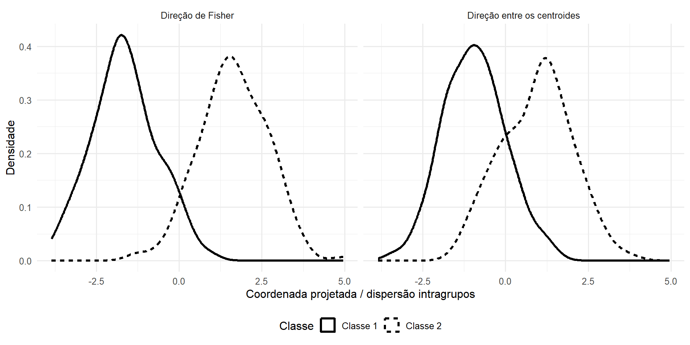
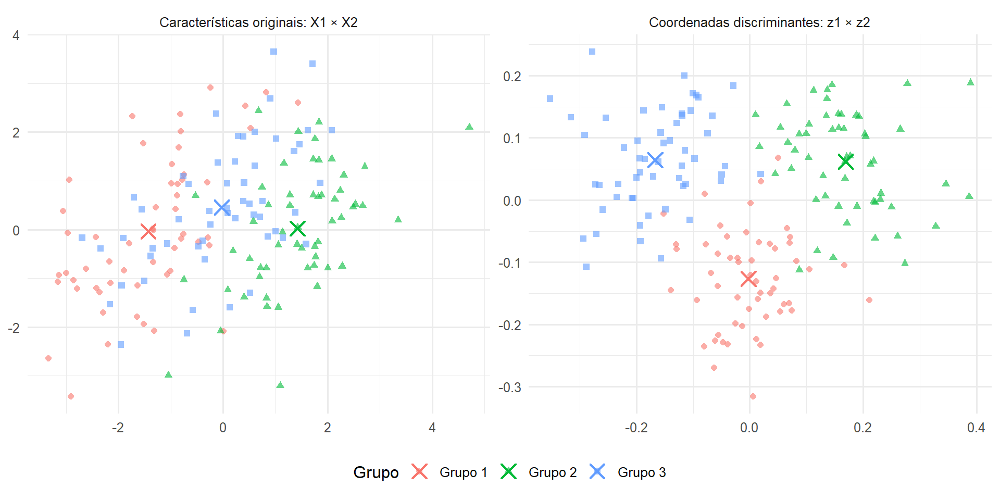

20 Formulação da Análise Discriminante
A Análise Discriminante estuda problemas com grupos previamente conhecidos e unidades descritas por vetores de características quantitativas. Seus objetivos incluem representar a separação entre os grupos e construir regras para classificar novas observações.
Duas formulações serão utilizadas. Na formulação probabilística, as classes são descritas por distribuições condicionais e a classificação é tratada como um problema de decisão envolvendo probabilidades a priori, perdas e probabilidades posteriores. Na formulação geométrica de Fisher, procuram-se combinações lineares que maximizem a separação entre grupos relativamente à dispersão intragrupos (Anderson, 2003; Fisher, 1936; Johnson; Wichern, 2007; Rencher; Christensen, 2012).
As duas construções resolvem problemas distintos, embora possam produzir estruturas matemáticas relacionadas sob condições específicas. O capítulo desenvolve a regra de Bayes, as regras discriminantes linear e quadrática sob normalidade, o critério de Fisher e sua formulação por autovalores generalizados.
Parâmetros populacionais, quantidades amostrais e regras estimadas serão distinguidos explicitamente. Algoritmos, regularização, seleção de variáveis e avaliação preditiva pertencem à etapa metodológica posterior.
Os elementos centrais são sintetizados na Tabela 20.1.
| Formulação | Objeto de partida | Problema | Resultado |
|---|---|---|---|
| decisão estatística | densidades condicionais, probabilidades a priori e perdas | escolher uma ação para uma nova observação | regra de Bayes |
| normal com covariância comum | \(\boldsymbol{\mu}_k\), \(\boldsymbol{\Sigma}\) e \(\pi_k\) | minimizar risco sob perda zero–um | regra discriminante linear |
| normal com covariâncias distintas | \(\boldsymbol{\mu}_k\), \(\boldsymbol{\Sigma}_k\) e \(\pi_k\) | minimizar risco sob perda zero–um | regra discriminante quadrática |
| geométrica de Fisher | dispersões intragrupos e entre grupos | maximizar separação relativa | direções e coordenadas discriminantes |
20.1 O problema de discriminação e classificação
Considere uma variável aleatória de classe
\[ \mathsf C \in \{1,\ldots,K\}, \qquad K\geq2, \]
e um vetor aleatório de características
\[ \boldsymbol{\mathsf X} = \begin{pmatrix} \mathsf X_1\\ \vdots\\ \mathsf X_p \end{pmatrix} \in \mathbb R^p. \]
Para cada classe
\[ k\in\{1,\ldots,K\}, \]
existe uma distribuição condicional de
\[ \boldsymbol{\mathsf X} \mid \mathsf C=k. \]
Uma realização
\[ \mathbf x \in \mathbb R^p \]
representa os valores observados das características de uma unidade.
Durante a construção da técnica, os rótulos das unidades utilizadas para caracterizar os grupos são conhecidos. Por isso, a Análise Discriminante pertence aos problemas supervisionados.
Na classificação, procura-se uma regra
\[ \psi: \mathbb R^p \longrightarrow \{1,\ldots,K\} \]
que associe uma nova observação
\[ \mathbf x \]
a uma das classes.
A qualidade preditiva de uma regra estimada constitui um problema adicional. Taxas de erro observadas, matrizes de confusão, validação cruzada e outros procedimentos de avaliação não serão confundidos com a formulação matemática da regra.
20.2 Classificação como problema de decisão
A classificação pode ser formulada como um problema de decisão. No Módulo 2, funções de perda e risco foram introduzidas no contexto da estimação; aqui, esses conceitos são aplicados a ações de classificação e complementados por probabilidades a priori, probabilidades posteriores e pela regra de Bayes.
Para cada
\[ \mathbf x \in \mathbb R^p, \]
deve-se escolher uma ação
\[ a \in \mathcal A, \qquad \mathcal A = \{1,\ldots,K\}, \]
em que a ação
\[ a=g \]
significa classificar a observação na classe \(k\).
A decisão depende de três objetos:
- probabilidades a priori das classes;
- distribuições condicionais das características;
- perdas associadas às possíveis decisões.
20.2.1 Distribuição prévia das classes
Definição 20.1 (Probabilidades a priori das classes) Seja
\[ \mathsf C \in \{1,\ldots,K\} \]
uma variável aleatória de classe.
As probabilidades a priori são
\[ \pi_k = P \left( \mathsf C=k \right), \qquad k=1,\ldots,K, \]
tais que
\[ \pi_k>0 \]
e
\[ \sum_{k=1}^{K} \pi_k = 1. \]
As probabilidades a priori descrevem a distribuição das classes antes da observação das características da nova unidade.
Elas são parâmetros do problema de decisão. Não devem ser confundidas automaticamente com proporções de grupos observadas em uma amostra. A relação entre probabilidades populacionais e estimativas amostrais será discutida posteriormente.
20.2.2 Densidades condicionais e probabilidades posteriores
Suponha que, para cada classe \(k\),
\[ \boldsymbol{\mathsf X} \mid \mathsf C=k \]
possua densidade
\[ f_k(\mathbf x) = f \left( \mathbf x \mid \mathsf C=k \right). \]
Para uma observação \(\mathbf x\) tal que
\[ \sum_{h=1}^{G} \pi_h f_h(\mathbf x) > 0, \]
o teorema de Bayes fornece
\[ P \left( \mathsf C=k \mid \boldsymbol{\mathsf X}=\mathbf x \right) = \frac{ \pi_k f_k(\mathbf x) }{ \displaystyle \sum_{h=1}^{G} \pi_h f_h(\mathbf x) }. \tag{20.1}\]
A probabilidade posterior combina dois tipos de informação.
O fator
\[ \pi_k \]
representa a frequência probabilística da classe antes de observar \(\mathbf x\).
O fator
\[ f_k(\mathbf x) \]
mede a densidade atribuída à observação \(\mathbf x\) pela distribuição condicional da classe.
A probabilidade posterior, isoladamente, não determina a decisão quando diferentes erros de classificação possuem consequências distintas. A função de perda incorpora essas consequências ao problema.
20.3 Perda e risco de classificação
Definição 20.2 (Perda de classificação) Considere o conjunto de ações
\[ \mathcal A = \{1,\ldots,K\} \]
e as classes verdadeiras
\[ g \in \{1,\ldots,K\}. \]
Uma função de perda de classificação é uma função
\[ L: \mathcal A \times \{1,\ldots,K\} \longrightarrow [0,\infty) \]
tal que
\[ L(a,g) \]
quantifica a consequência de escolher a ação \(a\) quando a classe verdadeira é \(k\).
Os valores
\[ L(g,g) \]
correspondem às decisões corretas, enquanto
\[ L(a,g), \qquad a\neq g, \]
correspondem aos diferentes tipos de erro.
A teoria não exige que todos os erros possuam a mesma consequência.
Definição 20.3 (Risco condicional de classificação) Considere
\[ \mathsf C \in \{1,\ldots,K\}, \]
o conjunto de ações
\[ \mathcal A = \{1,\ldots,K\}, \]
uma função de perda
\[ L: \mathcal A \times \{1,\ldots,K\} \longrightarrow [0,\infty) \]
e uma observação
\[ \mathbf x \in \mathbb R^p \]
para a qual as probabilidades posteriores
\[ P \left( \mathsf C=k \mid \boldsymbol{\mathsf X}=\mathbf x \right) \]
estão definidas.
O risco condicional de escolher
\[ a\in\mathcal A \]
é
\[ R \left( a\mid\mathbf x \right) = \sum_{k=1}^{K} L(a,g) P \left( \mathsf C=k \mid \boldsymbol{\mathsf X}=\mathbf x \right). \tag{20.2}\]
O risco é uma esperança condicional da perda: para uma observação fixa \(\mathbf x\), cada possível consequência é ponderada pela probabilidade posterior da respectiva classe verdadeira.
20.3.1 Minimização do risco condicional
Definição 20.4 (Regra de Bayes para classificação) Considere o conjunto de ações
\[ \mathcal A = \{1,\ldots,K\} \]
e, para cada
\[ \mathbf x \in \mathbb R^p, \]
riscos condicionais
\[ R \left( a\mid\mathbf x \right), \qquad a\in\mathcal A. \]
O conjunto das ações de Bayes é
\[ \mathcal A_{\mathrm B} (\mathbf x) = \underset{ a\in\mathcal A }{ \operatorname{arg\,min} } \; R \left( a\mid\mathbf x \right). \tag{20.3}\]
Uma regra de Bayes é qualquer função
\[ \psi_{\mathrm B}: \mathbb R^p \longrightarrow \mathcal A \]
tal que
\[ \psi_{\mathrm B}(\mathbf x) \in \mathcal A_{\mathrm B}(\mathbf x) \]
para todo \(\mathbf x\) em que os riscos estejam definidos.
Quando existem várias ações minimizadoras, uma convenção de desempate determina uma regra unívoca.
A regra ótima depende conjuntamente:
- das distribuições condicionais;
- das probabilidades a priori;
- da função de perda.
Portanto, o problema de classificação não é determinado somente pela geometria dos grupos no espaço das características.
20.3.2 Perda zero–um
Um caso particular é
\[ L(a,g) = \begin{cases} 0, & a=g, \\[4pt] 1, & a\neq g. \end{cases} \tag{20.4}\]
Nesse caso,
\[ \begin{aligned} R \left( a\mid\mathbf x \right) &= \sum_{g\neq a} P \left( \mathsf C=k \mid \boldsymbol{\mathsf X}=\mathbf x \right) \\ &= 1 - P \left( \mathsf C=a \mid \boldsymbol{\mathsf X}=\mathbf x \right). \end{aligned} \]
Assim, minimizar o risco equivale a maximizar a probabilidade posterior.
O conjunto das classes ótimas é
\[ \underset{ k\in\{1,\ldots,K\} }{ \operatorname{arg\,max} } \; P \left( \mathsf C=k \mid \boldsymbol{\mathsf X}=\mathbf x \right). \]
Por Equação 20.1, o denominador é comum a todas as classes. Portanto,
\[ \psi_{\mathrm B}(\mathbf x) \in \underset{ k\in\{1,\ldots,K\} }{ \operatorname{arg\,max} } \; \pi_k f_k(\mathbf x). \tag{20.5}\]
Quando
\[ f_k(\mathbf x)>0 \]
para todas as classes, a mesma comparação pode ser realizada por
\[ \log\pi_k + \log f_k(\mathbf x), \tag{20.6}\]
pois o logaritmo é estritamente crescente em
\[ (0,\infty). \]
A regra de máxima probabilidade posterior é, portanto, um caso particular da regra de Bayes associado à perda zero–um.
Com perdas assimétricas, maximizar a posterior não é necessariamente ótimo. Nesse caso, a decisão continua sendo determinada por Equação 20.3.
Essa distinção será importante posteriormente: probabilidades a priori e perdas pertencem ao problema de decisão, enquanto o critério geométrico de Fisher é construído a partir das dispersões entre e dentro dos grupos.
20.4 Discriminação linear sob normalidade
Considere agora a especialização probabilística em que
\[ \boldsymbol{\mathsf X} \mid \mathsf C=k \sim N_p \left( \boldsymbol{\mu}_k, \boldsymbol{\Sigma} \right), \qquad k=1,\ldots,K, \tag{20.7}\]
com
\[ \boldsymbol{\mu}_k \in \mathbb R^p \]
e matriz de covariâncias comum
\[ \boldsymbol{\Sigma} \in \mathbb R^{p\times p}, \qquad \boldsymbol{\Sigma} \succ \mathbf0. \]
Além disso, considere probabilidades a priori
\[ \pi_k>0, \qquad \sum_{k=1}^{K}\pi_k=1. \]
A normalidade não foi necessária para definir a regra de Bayes. Ela passa a ser utilizada agora para especificar explicitamente as densidades
\[ f_k(\mathbf x). \]
O capítulo sobre a distribuição normal multivariada mostrou em Equação 9.49 que a comparação entre duas log-densidades normais com a mesma matriz de covariâncias é afim em \(\mathbf x\).
A Análise Discriminante utiliza esse resultado dentro do problema de decisão.
Sob perda zero–um, deve-se comparar
\[ \log\pi_k + \log f_k(\mathbf x). \]
A log-densidade normal da classe \(k\) contém
\[ -\frac12 \log \left| \boldsymbol{\Sigma} \right| - \frac12 (\mathbf x-\boldsymbol{\mu}_k)^\top \boldsymbol{\Sigma}^{-1} (\mathbf x-\boldsymbol{\mu}_k), \]
além do termo
\[ -\frac p2\log(2\pi). \]
Como
\[ \boldsymbol{\Sigma} \]
é comum a todas as classes,
\[ -\frac p2\log(2\pi) \]
e
\[ -\frac12 \log \left| \boldsymbol{\Sigma} \right| \]
não participam da comparação entre grupos.
Expandindo a forma quadrática,
\[ \begin{aligned} & -\frac12 (\mathbf x-\boldsymbol{\mu}_k)^\top \boldsymbol{\Sigma}^{-1} (\mathbf x-\boldsymbol{\mu}_k) \\ &= -\frac12 \mathbf x^\top \boldsymbol{\Sigma}^{-1} \mathbf x + \mathbf x^\top \boldsymbol{\Sigma}^{-1} \boldsymbol{\mu}_k - \frac12 \boldsymbol{\mu}_k^\top \boldsymbol{\Sigma}^{-1} \boldsymbol{\mu}_k. \end{aligned} \]
O termo
\[ -\frac12 \mathbf x^\top \boldsymbol{\Sigma}^{-1} \mathbf x \]
também é comum a todas as classes.
Restam apenas os termos que dependem de \(k\).
Definição 20.5 (Função discriminante linear) Considere
\[ K\geq2 \]
classes com
\[ \boldsymbol{\mathsf X} \mid \mathsf C=k \sim N_p \left( \boldsymbol{\mu}_k, \boldsymbol{\Sigma} \right), \qquad k=1,\ldots,K, \]
em que
\[ \boldsymbol{\mu}_k \in \mathbb R^p, \qquad \boldsymbol{\Sigma} \in \mathbb R^{p\times p}, \qquad \boldsymbol{\Sigma}\succ\mathbf0, \]
e probabilidades a priori
\[ \pi_k>0, \qquad \sum_{k=1}^{K}\pi_k=1. \]
Sob perda zero–um, a função discriminante linear da classe \(k\) é
\[ \delta_k(\mathbf x) = \mathbf x^\top \boldsymbol{\Sigma}^{-1} \boldsymbol{\mu}_k - \frac12 \boldsymbol{\mu}_k^\top \boldsymbol{\Sigma}^{-1} \boldsymbol{\mu}_k + \log\pi_k. \tag{20.8}\]
A regra discriminante linear escolhe qualquer classe que maximize essa função:
\[ \psi_{\mathrm{LDA}}(\mathbf x) \in \underset{ k\in\{1,\ldots,K\} }{ \operatorname{arg\,max} } \; \delta_k(\mathbf x). \tag{20.9}\]
Quando o máximo é único, a classificação é determinada sem necessidade de convenção adicional de desempate.
A sigla LDA, de Linear Discriminant Analysis, é tradicional. A função
\[ \delta_k(\mathbf x) \]
é, matematicamente, afim em \(\mathbf x\):
\[ \delta_k(\mathbf x) = \mathbf x^\top \mathbf b_k + c_k, \]
com
\[ \mathbf b_k = \boldsymbol{\Sigma}^{-1} \boldsymbol{\mu}_k \]
e
\[ c_k = - \frac12 \boldsymbol{\mu}_k^\top \boldsymbol{\Sigma}^{-1} \boldsymbol{\mu}_k + \log\pi_k. \]
A denominação “linear” refere-se convencionalmente à estrutura das fronteiras de decisão, que serão hiperplanos.
20.4.1 Fronteiras entre classes
Considere duas classes distintas
\[ g\neq h. \]
A fronteira de decisão entre elas é o conjunto de pontos para os quais
\[ \delta_k(\mathbf x) = \delta_h(\mathbf x). \]
Substituindo Equação 20.8,
\[ \begin{aligned} 0 &= \mathbf x^\top \boldsymbol{\Sigma}^{-1} \left( \boldsymbol{\mu}_k - \boldsymbol{\mu}_h \right) \\ &\quad - \frac12 \left( \boldsymbol{\mu}_k^\top \boldsymbol{\Sigma}^{-1} \boldsymbol{\mu}_k - \boldsymbol{\mu}_h^\top \boldsymbol{\Sigma}^{-1} \boldsymbol{\mu}_h \right) + \log \frac{\pi_k}{\pi_h}. \end{aligned} \tag{20.10}\]
A equação possui a forma
\[ \mathbf x^\top\mathbf v + b = 0, \]
e define um hiperplano sempre que
\[ \mathbf v = \boldsymbol{\Sigma}^{-1} \left( \boldsymbol{\mu}_k - \boldsymbol{\mu}_h \right) \neq \mathbf0. \]
Se
\[ \boldsymbol{\mu}_k \neq \boldsymbol{\mu}_h, \]
a positividade definida de
\[ \boldsymbol{\Sigma} \]
garante
\[ \mathbf v\neq\mathbf0. \]
O vetor normal ao hiperplano é, portanto,
\[ \boldsymbol{\Sigma}^{-1} \left( \boldsymbol{\mu}_k - \boldsymbol{\mu}_h \right). \tag{20.11}\]
A diferença bruta entre os vetores de médias,
\[ \boldsymbol{\mu}_k - \boldsymbol{\mu}_h, \]
não determina sozinha a orientação da fronteira.
Ela é transformada por
\[ \boldsymbol{\Sigma}^{-1}, \]
de modo que variâncias e covariâncias alteram a direção relevante para discriminar as classes.
As probabilidades a priori entram apenas pelo termo
\[ \log \frac{\pi_k}{\pi_h}. \]
Mantidos os vetores de médias e a matriz de covariâncias, alterar as probabilidades a priori desloca o hiperplano, mas não modifica seu vetor normal.
Há um caso degenerado importante. Se
\[ \boldsymbol{\mu}_k = \boldsymbol{\mu}_h, \]
as duas classes possuem a mesma densidade condicional sob o modelo de covariância comum. A comparação entre elas é determinada somente pelas probabilidades a priori; nesse caso, não existe uma fronteira hiperplana não trivial produzida pelas características.
20.4.2 Relação com a distância de Mahalanobis
A distância de Mahalanobis foi definida em Definição 8.9. Para a classe \(k\),
\[ d_M^2 \left( \mathbf x, \boldsymbol{\mu}_k; \boldsymbol{\Sigma} \right) = (\mathbf x-\boldsymbol{\mu}_k)^\top \boldsymbol{\Sigma}^{-1} (\mathbf x-\boldsymbol{\mu}_k). \]
Essa forma quadrática é exatamente a quantidade que aparece no expoente da densidade normal multivariada.
Sob o modelo em Equação 20.7 e perda zero–um, a comparação entre classes pode ser escrita como
\[ -\frac12 d_M^2 \left( \mathbf x, \boldsymbol{\mu}_k; \boldsymbol{\Sigma} \right) + \log\pi_k. \tag{20.12}\]
Consequentemente,
\[ \psi_{\mathrm{LDA}}(\mathbf x) \in \underset{ k\in\{1,\ldots,K\} }{ \operatorname{arg\,min} } \left\{ d_M^2 \left( \mathbf x, \boldsymbol{\mu}_k; \boldsymbol{\Sigma} \right) - 2\log\pi_k \right\}. \tag{20.13}\]
Essa forma evidencia dois componentes distintos da decisão:
- a posição de \(\mathbf x\) relativamente ao centro da classe segundo a geometria de Mahalanobis;
- o peso probabilístico a priori atribuído à classe.
Se
\[ \pi_1 = \cdots = \pi_G = \frac1G, \]
o termo
\[ -2\log\pi_k \]
é comum a todas as classes e pode ser retirado da comparação.
Assim,
\[ \psi_{\mathrm{LDA}}(\mathbf x) \in \underset{ k\in\{1,\ldots,K\} }{ \operatorname{arg\,min} } \; d_M^2 \left( \mathbf x, \boldsymbol{\mu}_k; \boldsymbol{\Sigma} \right). \tag{20.14}\]
Sob normalidade, covariância comum, probabilidades a priori iguais e perda zero–um, a regra de Bayes classifica, portanto, pela menor distância de Mahalanobis ao centro populacional da classe.
A conexão com os fundamentos do Módulo 2 é direta. A mesma matriz
\[ \boldsymbol{\Sigma} \]
que determina a forma dos elipsoides da distribuição normal determina também a métrica utilizada para comparar a nova observação com os centroides.
A classificação não utiliza uma proximidade euclidiana bruta. Ela utiliza uma geometria que incorpora simultaneamente:
- as escalas das variáveis;
- suas variâncias;
- suas covariâncias.
Essa interpretação não exige reconstruir a teoria da distância de Mahalanobis: ela mostra como uma estrutura geométrica já estabelecida passa a determinar uma regra probabilística de classificação.
A LDA apresentada até aqui é uma regra populacional: utiliza
\[ \boldsymbol{\mu}_1,\ldots,\boldsymbol{\mu}_K, \qquad \boldsymbol{\Sigma}, \qquad \pi_1,\ldots,\pi_G, \]
que são parâmetros populacionais.
Na prática, esses parâmetros geralmente não são conhecidos e precisam ser estimados a partir de observações com classes conhecidas. A distinção entre a regra populacional e sua versão estimada será estabelecida após a formulação da discriminação quadrática.
20.5 Discriminação quadrática
A estrutura linear da seção anterior decorreu da hipótese de que todas as classes compartilham a mesma matriz de covariâncias.
Considere agora
\[ \boldsymbol{\mathsf X} \mid \mathsf C=k \sim N_p \left( \boldsymbol{\mu}_k, \boldsymbol{\Sigma}_k \right), \qquad k=1,\ldots,K, \tag{20.15}\]
em que
\[ \boldsymbol{\mu}_k \in \mathbb R^p \]
e
\[ \boldsymbol{\Sigma}_k \in \mathbb R^{p\times p}, \qquad \boldsymbol{\Sigma}_k \succ \mathbf0. \]
Considere também probabilidades a priori
\[ \pi_k>0, \qquad \sum_{k=1}^{K}\pi_k=1. \]
A regra de Bayes continua sendo determinada pelas probabilidades posteriores e pela função de perda. A diferença em relação à LDA está no modelo utilizado para as distribuições condicionais.
Sob perda zero–um, deve-se comparar
\[ \log\pi_k + \log f_k(\mathbf x). \]
Para a distribuição normal da classe \(k\),
\[ \begin{aligned} \log f_k(\mathbf x) &= -\frac p2 \log(2\pi) - \frac12 \log \left| \boldsymbol{\Sigma}_k \right| \\ &\quad - \frac12 (\mathbf x-\boldsymbol{\mu}_k)^\top \boldsymbol{\Sigma}_k^{-1} (\mathbf x-\boldsymbol{\mu}_k). \end{aligned} \]
O primeiro termo é comum a todas as classes, mas os demais dependem de \(k\).
Diferentemente do que ocorreu em Equação 20.7, não existe agora uma única matriz de covariâncias que permita cancelar os termos quadráticos em \(\mathbf x\).
A comparação de log-densidades normais com matrizes de covariâncias distintas foi estabelecida em Equação 9.50. Como as matrizes inversas dependem da classe, permanecem, em geral, termos quadráticos em \(\mathbf x\).
Definição 20.6 (Função discriminante quadrática) Considere
\[ K\geq2 \]
classes com
\[ \boldsymbol{\mathsf X} \mid \mathsf C=k \sim N_p \left( \boldsymbol{\mu}_k, \boldsymbol{\Sigma}_k \right), \qquad k=1,\ldots,K, \]
em que
\[ \boldsymbol{\mu}_k \in \mathbb R^p, \]
\[ \boldsymbol{\Sigma}_k \in \mathbb R^{p\times p}, \qquad \boldsymbol{\Sigma}_k \succ \mathbf0, \]
e probabilidades a priori
\[ \pi_k>0, \qquad \sum_{k=1}^{K}\pi_k=1. \]
Sob perda zero–um, a função discriminante quadrática da classe \(k\) é
\[ \delta_k^{Q}(\mathbf x) = -\frac12 \log \left| \boldsymbol{\Sigma}_k \right| - \frac12 (\mathbf x-\boldsymbol{\mu}_k)^\top \boldsymbol{\Sigma}_k^{-1} (\mathbf x-\boldsymbol{\mu}_k) + \log\pi_k. \tag{20.16}\]
A regra discriminante quadrática escolhe qualquer classe que maximize o escore:
\[ \psi_{\mathrm{QDA}}(\mathbf x) \in \underset{ k\in\{1,\ldots,K\} }{ \operatorname{arg\,max} } \; \delta_k^{Q}(\mathbf x). \tag{20.17}\]
Quando o máximo é único, a classe fica determinada sem convenção adicional de desempate.
A denominação Quadratic Discriminant Analysis decorre da presença de uma forma quadrática específica para cada classe.
Expandindo-a,
\[ \begin{aligned} & -\frac12 (\mathbf x-\boldsymbol{\mu}_k)^\top \boldsymbol{\Sigma}_k^{-1} (\mathbf x-\boldsymbol{\mu}_k) \\ &= -\frac12 \mathbf x^\top \boldsymbol{\Sigma}_k^{-1} \mathbf x + \mathbf x^\top \boldsymbol{\Sigma}_k^{-1} \boldsymbol{\mu}_k - \frac12 \boldsymbol{\mu}_k^\top \boldsymbol{\Sigma}_k^{-1} \boldsymbol{\mu}_k. \end{aligned} \]
Como
\[ \boldsymbol{\Sigma}_k^{-1} \]
depende da classe, o coeficiente do termo quadrático
\[ \mathbf x^\top \boldsymbol{\Sigma}_k^{-1} \mathbf x \]
também depende de \(k\).
Duas partes da função possuem papéis distintos.
A forma
\[ (\mathbf x-\boldsymbol{\mu}_k)^\top \boldsymbol{\Sigma}_k^{-1} (\mathbf x-\boldsymbol{\mu}_k) \]
é a distância de Mahalanobis quadrática entre a observação e o centro da classe segundo a geometria própria daquela população.
Já o termo
\[ \log \left| \boldsymbol{\Sigma}_k \right| \]
é parte do fator de normalização da densidade normal e penaliza classes segundo sua dispersão multivariada.
Geometricamente,
\[ \left| \boldsymbol{\Sigma}_k \right|^{1/2} \]
é proporcional ao fator de volume dos elipsoides definidos por uma mesma distância de Mahalanobis. Portanto, duas classes podem atribuir a um ponto a mesma distância de Mahalanobis e ainda produzir funções discriminantes distintas porque suas distribuições possuem diferentes concentrações no espaço.
20.5.1 Fronteiras quadráticas
Considere duas classes
\[ g\neq h. \]
Sua fronteira de decisão é o conjunto de pontos que satisfazem
\[ \delta_k^{Q}(\mathbf x) = \delta_h^{Q}(\mathbf x). \]
Subtraindo as duas funções, obtém-se uma equação que contém o termo
\[ \frac12 \mathbf x^\top \left( \boldsymbol{\Sigma}_h^{-1} - \boldsymbol{\Sigma}_k^{-1} \right) \mathbf x. \]
Além dele, aparecem termos lineares em \(\mathbf x\) e termos constantes determinados pelos vetores de médias, determinantes das covariâncias e probabilidades a priori.
Assim, a fronteira pode ser escrita na forma geral
\[ \mathbf x^\top \mathbf A_{gh} \mathbf x + \mathbf b_{gh}^\top \mathbf x + c_{gh} = 0, \tag{20.18}\]
em que
\[ \mathbf A_{gh} = \frac12 \left( \boldsymbol{\Sigma}_h^{-1} - \boldsymbol{\Sigma}_k^{-1} \right). \]
Em geral,
\[ \mathbf A_{gh} \neq \mathbf0, \]
e a fronteira pertence à família das superfícies quadráticas.
Se, porém,
\[ \boldsymbol{\Sigma}_k = \boldsymbol{\Sigma}_h, \]
então
\[ \mathbf A_{gh} = \mathbf0. \]
Quando todas as classes compartilham
\[ \boldsymbol{\Sigma}_1 = \cdots = \boldsymbol{\Sigma}_K = \boldsymbol{\Sigma}, \]
os termos quadráticos e os log-determinantes comuns cancelam-se para todas as comparações entre classes. A QDA reduz-se então à estrutura da LDA em Equação 20.8.
Portanto, a linearidade ou quadraticidade da fronteira não é uma escolha gráfica posterior. Ela decorre diretamente da estrutura probabilística atribuída às matrizes de covariâncias condicionais.
A Figura 20.1 ilustra essa diferença para duas classes normais. No primeiro painel, a mesma matriz de covariâncias é utilizada para ambas as populações e a fronteira é uma reta. No segundo, cada população possui sua própria matriz de covariâncias e a fronteira pode ser curva.
A diferença visual entre as fronteiras é uma consequência das hipóteses probabilísticas. Na LDA, os termos quadráticos comuns cancelam-se. Na QDA, esse cancelamento não ocorre quando as matrizes de covariâncias diferem.
20.6 Da regra populacional à regra estimada
As funções discriminantes formuladas até aqui utilizam parâmetros populacionais.
Na LDA, são necessários
\[ \boldsymbol{\mu}_1,\ldots,\boldsymbol{\mu}_K, \qquad \boldsymbol{\Sigma}, \qquad \pi_1,\ldots,\pi_G. \]
Na QDA, são necessários
\[ \boldsymbol{\mu}_1,\ldots,\boldsymbol{\mu}_K, \qquad \boldsymbol{\Sigma}_1,\ldots,\boldsymbol{\Sigma}_K, \qquad \pi_1,\ldots,\pi_G. \]
Essas quantidades são parâmetros fixos da distribuição populacional.
Em uma aplicação, elas geralmente são desconhecidas. Os grupos conhecidos na amostra fornecem informação para estimá-las.
A distinção entre estimador e estimativa foi formalizada em Definição 10.4. Neste capítulo, ela se aplica aos parâmetros das distribuições condicionais:
- parâmetro: característica fixa e desconhecida da população;
- estimador: estatística aleatória utilizada para estimar o parâmetro;
- estimativa: valor assumido pelo estimador após a observação dos dados;
- regra estimada: regra obtida substituindo os parâmetros desconhecidos por suas estimativas.
20.6.1 Amostra com classes conhecidas
Considere uma amostra de treinamento com
\[ n = \sum_{k=1}^{K} n_k \]
observações, em que
\[ n_k\geq1 \]
é o número de unidades observadas da classe \(k\).
Para a classe \(k\), sejam
\[ \boldsymbol{\mathsf X}_{1g}, \ldots, \boldsymbol{\mathsf X}_{n_k g} \in \mathbb R^p \]
os vetores aleatórios da amostra.
Aplicando a média amostral de Equação 10.8 separadamente às observações da classe \(k\), obtém-se
\[ \overline{\boldsymbol{\mathsf X}}_k = \frac1{n_k} \sum_{i=1}^{n_k} \boldsymbol{\mathsf X}_{ik} \in \mathbb R^p. \tag{20.19}\]
Após a observação dos dados, conforme Equação 10.9,
\[ \overline{\mathbf x}_k = \frac1{n_k} \sum_{i=1}^{n_k} \mathbf x_{ig}. \tag{20.20}\]
Quando
\[ n_k\geq2, \]
a matriz de covariâncias amostral definida em Definição 10.14, aplicada às observações da classe \(k\), é
\[ \boldsymbol{\mathsf S}_k = \frac1{n_k-1} \sum_{i=1}^{n_k} \left( \boldsymbol{\mathsf X}_{ik} - \overline{\boldsymbol{\mathsf X}}_k \right) \left( \boldsymbol{\mathsf X}_{ik} - \overline{\boldsymbol{\mathsf X}}_k \right)^\top. \tag{20.21}\]
Sua realização observada, correspondente à matriz de covariâncias de Definição 8.11, é
\[ \mathbf S_k = \frac1{n_k-1} \sum_{i=1}^{n_k} \left( \mathbf x_{ig} - \overline{\mathbf x}_k \right) \left( \mathbf x_{ig} - \overline{\mathbf x}_k \right)^\top. \tag{20.22}\]
Essas estatísticas são definidas sem exigir normalidade multivariada. Sob o modelo normal discriminante, elas são utilizadas para estimar os parâmetros das distribuições condicionais das classes.
20.6.2 Covariância comum na LDA
Se o modelo populacional supõe
\[ \boldsymbol{\Sigma}_1 = \cdots = \boldsymbol{\Sigma}_K = \boldsymbol{\Sigma}, \]
as informações de dispersão dentro das classes podem ser reunidas.
No modelo linear de grupos, Equação 11.107 estabelece que a SQPC residual observada coincide com a dispersão intragrupos,
\[ \mathbf E = \mathbf T_{\mathrm{intra}}. \]
Aplicando o estimador residual de covariância de Definição 11.13 ao modelo com \(K\) grupos, cujo posto é \(K\), obtém-se, para
\[ n>K, \]
a matriz de covariâncias agrupada
\[ \boldsymbol{\mathsf S}_p = \frac{ 1 }{ n-K } \boldsymbol{\mathsf T}_{\mathrm{intra}}, \tag{20.23}\]
e, após a observação,
\[ \mathbf S_p = \frac{ 1 }{ n-K } \mathbf T_{\mathrm{intra}}. \tag{20.24}\]
Essa é a estimativa agrupada da matriz de covariâncias comum utilizada na formulação amostral clássica da LDA.
Quando
\[ n_k\geq2, \qquad k=1,\ldots,K, \]
a relação também pode ser escrita como
\[ \mathbf S_p = \frac{ \displaystyle \sum_{k=1}^{K} (n_k-1) \mathbf S_k }{ n-K }. \]
Assim, a mesma matriz de dispersão intragrupos que aparece na formulação de Fisher fornece a estimativa de covariância comum utilizada na LDA.
20.6.3 Probabilidades a priori: especificação ou estimação
As probabilidades
\[ \pi_1,\ldots,\pi_G \]
também precisam ser conhecidas ou especificadas para construir a regra populacional de Bayes.
Quando a amostra constitui uma amostra aleatória representativa da mistura populacional das classes, uma possibilidade é o estimador empírico
\[ \widehat{\pi}_k = \frac{n_k}{n}. \tag{20.25}\]
Entretanto,
\[ \frac{n_k}{n} \]
não deve ser utilizado automaticamente como probabilidade a priori.
Em delineamentos que fixam artificialmente os tamanhos dos grupos, estudos caso-controle, amostragens desbalanceadas por planejamento ou situações em que prevalências externas são conhecidas, as proporções amostrais podem não representar
\[ P(\mathsf C=k). \]
As probabilidades a priori podem, portanto:
- ser conhecidas por informação populacional;
- ser especificadas como parte do problema de decisão;
- ser estimadas a partir da amostra quando o mecanismo amostral permite essa interpretação.
Esse ponto é independente da estimação dos vetores de médias e das matrizes de covariâncias.
20.7 Regra estimada da LDA
Suponha que, após observar a amostra de treinamento, estejam disponíveis
\[ \overline{\mathbf x}_1,\ldots,\overline{\mathbf x}_K, \]
uma matriz agrupada
\[ \mathbf S_p \succ \mathbf0 \]
e valores positivos
\[ \widehat{\pi}_1,\ldots,\widehat{\pi}_K \]
tais que
\[ \sum_{k=1}^{K} \widehat{\pi}_k = 1. \]
Definição 20.7 (Função discriminante linear estimada) Considere
\[ K\geq2, \]
vetores
\[ \overline{\mathbf x}_k \in \mathbb R^p, \qquad k=1,\ldots,K, \]
uma matriz
\[ \mathbf S_p \in \mathbb R^{p\times p}, \qquad \mathbf S_p\succ\mathbf0, \]
e valores
\[ \widehat{\pi}_k>0, \qquad \sum_{k=1}^{K} \widehat{\pi}_k=1. \]
A função discriminante linear estimada da classe \(k\) é
\[ \widehat{\delta}_k(\mathbf x) = \mathbf x^\top \mathbf S_p^{-1} \overline{\mathbf x}_k - \frac12 \overline{\mathbf x}_k^\top \mathbf S_p^{-1} \overline{\mathbf x}_k + \log \widehat{\pi}_k, \qquad \mathbf x\in\mathbb R^p. \tag{20.26}\]
A regra plug-in correspondente é
\[ \widehat{\psi}_{\mathrm{LDA}}(\mathbf x) \in \underset{ k\in\{1,\ldots,K\} }{ \operatorname{arg\,max} } \; \widehat{\delta}_k(\mathbf x). \tag{20.27}\]
A expressão possui a mesma forma algébrica da regra populacional, mas seus elementos têm natureza estatística diferente.
Na regra populacional,
\[ \boldsymbol{\mu}_k, \qquad \boldsymbol{\Sigma}, \qquad \pi_k \]
são parâmetros.
Na regra estimada,
\[ \overline{\mathbf x}_k, \qquad \mathbf S_p, \qquad \widehat{\pi}_k \]
são valores obtidos a partir de uma amostra de treinamento ou especificados a partir de informação externa.
Antes de observar a amostra, os estimadores correspondentes são aleatórios. Portanto, a própria regra estimada varia de uma amostra de treinamento para outra.
Essa variabilidade é distinta da aleatoriedade de uma nova observação a ser classificada.
20.8 Regra estimada da QDA
Na QDA, cada classe possui sua própria matriz de covariâncias.
Suponha que, após a observação da amostra,
\[ \mathbf S_k \succ \mathbf0, \qquad k=1,\ldots,K, \]
e que estejam disponíveis
\[ \overline{\mathbf x}_k \]
e
\[ \widehat{\pi}_k>0. \]
Definição 20.8 (Função discriminante quadrática estimada) Sob as condições anteriores, a função discriminante quadrática estimada da classe \(k\) é
\[ \widehat{\delta}_k^{Q}(\mathbf x) = -\frac12 \log \left| \mathbf S_k \right| - \frac12 (\mathbf x-\overline{\mathbf x}_k)^\top \mathbf S_k^{-1} (\mathbf x-\overline{\mathbf x}_k) + \log \widehat{\pi}_k. \tag{20.28}\]
A regra plug-in é
\[ \widehat{\psi}_{\mathrm{QDA}}(\mathbf x) \in \underset{ k\in\{1,\ldots,K\} }{ \operatorname{arg\,max} } \; \widehat{\delta}_k^{Q}(\mathbf x). \tag{20.29}\]
A QDA exige estimar
\[ G \]
matrizes de covariâncias distintas, enquanto a LDA utiliza uma única matriz agrupada.
Essa diferença possui consequências de posto e quantidade de informação necessária por grupo, que serão examinadas posteriormente na seção sobre existência e singularidade.
O ponto importante nesta etapa é distinguir a forma do modelo da estimação de seus parâmetros.
A hipótese
\[ \boldsymbol{\Sigma}_1 = \cdots = \boldsymbol{\Sigma}_K \]
define a estrutura populacional da LDA.
A utilização de
\[ \mathbf S_p \]
é uma etapa de estimação dessa estrutura.
Analogamente, a hipótese de matrizes populacionais específicas
\[ \boldsymbol{\Sigma}_k \]
define a QDA, enquanto
\[ \mathbf S_k \]
são suas estimativas amostrais usuais.
20.9 Regra populacional e regra estimada
A Tabela 20.2 sintetiza os níveis que não devem ser confundidos.
| Papel | LDA | QDA |
|---|---|---|
| médias populacionais | \(\boldsymbol{\mu}_k\) | \(\boldsymbol{\mu}_k\) |
| covariância populacional | \(\boldsymbol{\Sigma}\) comum | \(\boldsymbol{\Sigma}_k\) específica |
| probabilidades a priori | \(\pi_k\) | \(\pi_k\) |
| estimativa da média | \(\overline{\mathbf x}_k\) | \(\overline{\mathbf x}_k\) |
| estimativa de covariância | \(\mathbf S_p\) | \(\mathbf S_k\) |
| probabilidade a priori utilizada na regra estimada | \(\widehat{\pi}_k\) ou valor especificado | \(\widehat{\pi}_k\) ou valor especificado |
| função populacional | \(\delta_k(\mathbf x)\) | \(\delta_k^Q(\mathbf x)\) |
| função estimada | \(\widehat{\delta}_k(\mathbf x)\) | \(\widehat{\delta}_k^Q(\mathbf x)\) |
A substituição de parâmetros por estimativas não altera apenas a notação.
A regra populacional de Bayes é definida em relação à distribuição verdadeira e à função de perda especificada.
A regra plug-in utiliza uma aproximação dessa regra construída a partir da informação amostral.
Mesmo que o modelo normal esteja corretamente especificado, a regra estimada não coincide necessariamente com a regra populacional porque
\[ \overline{\mathbf x}_k \neq \boldsymbol{\mu}_k, \]
\[ \mathbf S_p \neq \boldsymbol{\Sigma} \]
ou
\[ \mathbf S_k \neq \boldsymbol{\Sigma}_k \]
em uma amostra finita.
Essa diferença decorre diretamente da distinção entre estimador e estimativa estabelecida em Definição 10.4: os estimadores são variáveis aleatórias e diferentes amostras podem produzir diferentes regras discriminantes estimadas.
A avaliação de quanto essa variabilidade afeta a classificação exige estudar o desempenho da regra estimada em novas observações. Esse problema pertence à etapa metodológica posterior e não será desenvolvido aqui.
20.10 O que as regras probabilísticas resolvem
As funções em Equação 20.8 e Equação 20.16 surgem de um problema de decisão.
Seu objetivo é determinar, para uma observação
\[ \mathbf x, \]
qual ação minimiza o risco condicional.
Sob perda zero–um, isso equivale a selecionar a classe de maior probabilidade posterior.
A estrutura populacional das duas regras é sintetizada na Tabela 20.3.
| Aspecto | LDA | QDA |
|---|---|---|
| modelo condicional | \(N_p(\boldsymbol{\mu}_k,\boldsymbol{\Sigma})\) | \(N_p(\boldsymbol{\mu}_k,\boldsymbol{\Sigma}_k)\) |
| covariância | comum a todas as classes | específica de cada classe |
| função discriminante | afim em \(\mathbf x\) | quadrática em \(\mathbf x\) |
| fronteira entre duas classes | hiperplano | superfície quadrática em geral |
| geometria de distância | uma única métrica de Mahalanobis | uma métrica de Mahalanobis para cada classe |
| probabilidades a priori | entram por \(\log\pi_k\) | entram por \(\log\pi_k\) |
| perda considerada nas fórmulas apresentadas | zero–um | zero–um |
| resultado imediato | regra populacional de classificação | regra populacional de classificação |
A construção probabilística não procura uma direção única que maximize a separação entre os grupos.
Ela compara diretamente os modelos condicionais das classes no espaço original das características e produz uma regra de decisão.
A formulação geométrica de Fisher parte de outro problema.
Nela, os rótulos conhecidos serão utilizados para decompor a dispersão em componentes dentro e entre os grupos e procurar combinações lineares nas quais a separação entre eles seja grande relativamente à dispersão intragrupos.
Essa nova formulação utilizará diretamente os fundamentos sobre esperança, covariância, formas quadráticas e autovalores generalizados desenvolvidos nos Módulos 1 e 2.
20.11 Formulação geométrica de Fisher
A formulação probabilística desenvolvida nas seções anteriores produz uma regra para decidir a classe de uma nova observação. A formulação de Fisher parte de outro problema: construir combinações lineares das características que evidenciem a separação entre grupos previamente conhecidos.
Esse problema pode ser formulado tanto em nível populacional quanto em nível amostral.
A formulação populacional permite identificar qual estrutura de dispersão se pretende representar. A formulação amostral substitui essa estrutura pelas dispersões calculadas a partir das observações com rótulos conhecidos.
Nenhuma dessas formulações exige, para ser definida, que as distribuições condicionais sejam normais.
20.11.1 Dispersões populacionais dentro e entre grupos
Considere novamente
\[ \mathsf C \in \{1,\ldots,K\}, \]
com
\[ P(\mathsf C=k) = \pi_k, \qquad \pi_k>0, \qquad \sum_{k=1}^{K}\pi_k=1, \]
e um vetor aleatório
\[ \boldsymbol{\mathsf X} \in \mathbb R^p \]
com segundos momentos finitos.
Para cada classe, defina
\[ \boldsymbol{\mu}_k = E \left( \boldsymbol{\mathsf X} \mid \mathsf C=k \right) \in \mathbb R^p \]
e
\[ \boldsymbol{\Sigma}_k = \operatorname{Cov} \left( \boldsymbol{\mathsf X} \mid \mathsf C=k \right) \in \mathbb R^{p\times p}. \]
A média marginal de
\[ \boldsymbol{\mathsf X} \]
é
\[ \boldsymbol{\mu} = E \left( \boldsymbol{\mathsf X} \right) = \sum_{k=1}^{K} \pi_k \boldsymbol{\mu}_k. \tag{20.30}\]
Definição 20.9 (Dispersões populacionais de Fisher) Considere
\[ \mathsf C \in \{1,\ldots,K\}, \]
com
\[ P(\mathsf C=k)=\pi_k>0, \qquad \sum_{k=1}^{K}\pi_k=1, \]
e
\[ E \left( \| \boldsymbol{\mathsf X} \|^2 \right) < \infty. \]
Se
\[ \boldsymbol{\mu}_k = E \left( \boldsymbol{\mathsf X} \mid \mathsf C=k \right) \]
e
\[ \boldsymbol{\Sigma}_k = \operatorname{Cov} \left( \boldsymbol{\mathsf X} \mid \mathsf C=k \right), \]
defina a dispersão populacional intragrupos por
\[ \boldsymbol{\Sigma}_W = \sum_{k=1}^{K} \pi_k \boldsymbol{\Sigma}_k \in \mathbb R^{p\times p}, \tag{20.31}\]
e a dispersão populacional entre grupos por
\[ \boldsymbol{\Sigma}_B = \sum_{k=1}^{K} \pi_k \left( \boldsymbol{\mu}_k - \boldsymbol{\mu} \right) \left( \boldsymbol{\mu}_k - \boldsymbol{\mu} \right)^\top \in \mathbb R^{p\times p}, \tag{20.32}\]
em que
\[ \boldsymbol{\mu} = \sum_{k=1}^{K} \pi_k \boldsymbol{\mu}_k. \]
As duas matrizes são simétricas e semidefinidas positivas:
\[ \boldsymbol{\Sigma}_W \succeq \mathbf0 \]
e
\[ \boldsymbol{\Sigma}_B \succeq \mathbf0. \]
A primeira resume a variabilidade existente dentro das classes, enquanto a segunda resume a variabilidade dos vetores de médias das classes em torno da média marginal.
Essas duas componentes recuperam a matriz de covariâncias marginal de
\[ \boldsymbol{\mathsf X}. \]
Proposição 20.1 (Decomposição populacional da covariância por grupos) Considere
\[ \mathsf C \in \{1,\ldots,K\}, \]
com
\[ P(\mathsf C=k)=\pi_k>0, \qquad \sum_{k=1}^{K}\pi_k=1, \]
e
\[ E \left( \| \boldsymbol{\mathsf X} \|^2 \right) < \infty. \]
Defina
\[ \boldsymbol{\mu}_k = E \left( \boldsymbol{\mathsf X} \mid \mathsf C=k \right), \qquad \boldsymbol{\mu} = \sum_{k=1}^{K} \pi_k\boldsymbol{\mu}_k, \]
\[ \boldsymbol{\Sigma}_W = \sum_{k=1}^{K} \pi_k \operatorname{Cov} \left( \boldsymbol{\mathsf X} \mid \mathsf C=k \right) \]
e
\[ \boldsymbol{\Sigma}_B = \sum_{k=1}^{K} \pi_k (\boldsymbol{\mu}_k-\boldsymbol{\mu}) (\boldsymbol{\mu}_k-\boldsymbol{\mu})^\top. \]
Então,
\[ \operatorname{Cov} \left( \boldsymbol{\mathsf X} \right) = \boldsymbol{\Sigma}_W + \boldsymbol{\Sigma}_B. \tag{20.33}\]
Comprovação. Escreva
\[ \boldsymbol{\mathsf X} - \boldsymbol{\mu} = \left( \boldsymbol{\mathsf X} - \boldsymbol{\mu}_{\mathsf C} \right) + \left( \boldsymbol{\mu}_{\mathsf C} - \boldsymbol{\mu} \right), \]
em que
\[ \boldsymbol{\mu}_{\mathsf C} = E \left( \boldsymbol{\mathsf X} \mid \mathsf C \right). \]
Ao desenvolver o produto externo e tomar esperança, os termos cruzados são nulos porque
\[ E \left[ \boldsymbol{\mathsf X} - \boldsymbol{\mu}_{\mathsf C} \mid \mathsf C \right] = \mathbf0. \]
Assim,
\[ \begin{aligned} \operatorname{Cov} \left( \boldsymbol{\mathsf X} \right) &= E \left[ \operatorname{Cov} \left( \boldsymbol{\mathsf X} \mid \mathsf C \right) \right] \\ &\quad+ \operatorname{Cov} \left[ E \left( \boldsymbol{\mathsf X} \mid \mathsf C \right) \right] \\ &= \boldsymbol{\Sigma}_W + \boldsymbol{\Sigma}_B. \end{aligned} \]
Essa é a versão populacional da decomposição da dispersão que, para os dados observados, foi estabelecida em Proposição 8.10:
\[ \mathbf T = \mathbf T_{\mathrm{intra}} + \mathbf T_{\mathrm{entre}}. \]
As duas decomposições não devem ser confundidas.
Em
\[ \boldsymbol{\Sigma}_W \qquad\text{e}\qquad \boldsymbol{\Sigma}_B, \]
os objetos são parâmetros populacionais.
Em
\[ \mathbf T_{\mathrm{intra}} \qquad\text{e}\qquad \mathbf T_{\mathrm{entre}}, \]
os objetos são matrizes calculadas a partir de uma amostra observada.
20.11.2 Critério populacional de Fisher
Considere uma direção
\[ \mathbf a \in \mathbb R^p, \qquad \mathbf a\neq\mathbf0, \]
e a combinação linear
\[ \mathsf Z = \mathbf a^\top \boldsymbol{\mathsf X}. \]
Dentro da classe \(k\),
\[ \operatorname{Var} \left( \mathsf Z \mid \mathsf C=k \right) = \mathbf a^\top \boldsymbol{\Sigma}_k \mathbf a. \]
A média ponderada dessas variâncias é
\[ \sum_{k=1}^{K} \pi_k \operatorname{Var} \left( \mathsf Z \mid \mathsf C=k \right) = \mathbf a^\top \boldsymbol{\Sigma}_W \mathbf a. \tag{20.34}\]
Por outro lado, a variabilidade das médias condicionais projetadas é
\[ \sum_{k=1}^{K} \pi_k \left[ \mathbf a^\top \left( \boldsymbol{\mu}_k-\boldsymbol{\mu} \right) \right]^2 = \mathbf a^\top \boldsymbol{\Sigma}_B \mathbf a. \tag{20.35}\]
Definição 20.10 (Critério populacional de Fisher) Sejam
\[ \boldsymbol{\Sigma}_B, \boldsymbol{\Sigma}_W \in \mathbb R^{p\times p} \]
matrizes simétricas tais que
\[ \boldsymbol{\Sigma}_B \succeq \mathbf0 \qquad \text{e} \qquad \boldsymbol{\Sigma}_W \succ \mathbf0. \]
Para
\[ \mathbf a \in \mathbb R^p, \qquad \mathbf a\neq\mathbf0, \]
o critério populacional de Fisher é
\[ J_F^{(P)} (\mathbf a) = \frac{ \mathbf a^\top \boldsymbol{\Sigma}_B \mathbf a }{ \mathbf a^\top \boldsymbol{\Sigma}_W \mathbf a }. \tag{20.36}\]
O numerador mede a separação dos vetores de médias das classes depois da projeção.
O denominador mede a dispersão média existente dentro das classes nessa mesma direção.
Portanto, Fisher não procura simplesmente uma direção em que os vetores de médias estejam distantes. A separação é avaliada relativamente à variabilidade interna das populações.
Essa formulação requer segundos momentos finitos e, na forma clássica acima, positividade definida de
\[ \boldsymbol{\Sigma}_W. \]
Ela não exige normalidade multivariada.
Também não exige
\[ \boldsymbol{\Sigma}_1 = \cdots = \boldsymbol{\Sigma}_K. \]
Se as covariâncias forem comuns,
\[ \boldsymbol{\Sigma}_k = \boldsymbol{\Sigma}, \qquad k=1,\ldots,K, \]
então
\[ \boldsymbol{\Sigma}_W = \boldsymbol{\Sigma}, \]
situação que posteriormente estabelecerá uma ligação direta entre Fisher e a LDA.
20.12 Formulação amostral de Fisher
Considere agora uma amostra com grupos conhecidos, contendo
\[ n_k \]
observações no grupo \(k\) e
\[ n = \sum_{k=1}^{K} n_k \]
observações no total.
As matrizes de dispersão intragrupos e entre grupos foram definidas no Módulo 2 em Definição 8.14 e Definição 8.15:
\[ \mathbf T_{\mathrm{intra}} = \sum_{k=1}^{K} \sum_{i=1}^{n_k} \left( \mathbf x_{ig} - \overline{\mathbf x}_k \right) \left( \mathbf x_{ig} - \overline{\mathbf x}_k \right)^\top \]
e
\[ \mathbf T_{\mathrm{entre}} = \sum_{k=1}^{K} n_k \left( \overline{\mathbf x}_k - \overline{\mathbf x} \right) \left( \overline{\mathbf x}_k - \overline{\mathbf x} \right)^\top. \]
Pela propriedade estabelecida em Proposição 8.10,
\[ \mathbf T = \mathbf T_{\mathrm{intra}} + \mathbf T_{\mathrm{entre}}. \]
Esses resultados não precisam ser novamente demonstrados.
Para relacioná-los à formulação populacional, observe que
\[ \frac1n \mathbf T_{\mathrm{intra}} \]
e
\[ \frac1n \mathbf T_{\mathrm{entre}} \]
são os análogos empíricos das duas parcelas de dispersão quando os pesos dos grupos são
\[ \frac{n_k}{n}. \]
A multiplicação de ambas as matrizes por um mesmo escalar positivo não altera o quociente de Fisher. Portanto,
\[ \frac{ \mathbf a^\top (\mathbf T_{\mathrm{entre}}/n) \mathbf a }{ \mathbf a^\top (\mathbf T_{\mathrm{intra}}/n) \mathbf a } = \frac{ \mathbf a^\top \mathbf T_{\mathrm{entre}} \mathbf a }{ \mathbf a^\top \mathbf T_{\mathrm{intra}} \mathbf a }. \]
Assim, a formulação amostral pode ser escrita diretamente em termos das matrizes de dispersão já construídas no Módulo 2.
Os pesos
\[ n_k \]
presentes em
\[ \mathbf T_{\mathrm{entre}} \]
são pesos da decomposição da amostra observada. Eles não devem ser confundidos automaticamente com as probabilidades a priori
\[ \pi_k \]
utilizadas na regra de Bayes.
Em particular, quando os tamanhos dos grupos são fixados pelo delineamento, as proporções
\[ \frac{n_k}{n} \]
podem não representar as prevalências populacionais.
20.13 Dispersão depois de uma projeção
Considere
\[ \mathbf a \in \mathbb R^p, \qquad \mathbf a\neq\mathbf0, \]
e a combinação linear
\[ Z = \mathbf a^\top \mathbf x. \tag{20.37}\]
Depois da projeção, a dispersão amostral dentro dos grupos é
\[ \mathbf a^\top \mathbf T_{\mathrm{intra}} \mathbf a, \tag{20.38}\]
enquanto a dispersão amostral entre os centroides é
\[ \mathbf a^\top \mathbf T_{\mathrm{entre}} \mathbf a. \tag{20.39}\]
A primeira quantidade aumenta quando as observações permanecem muito dispersas em torno de seus respectivos centroides depois da projeção.
A segunda aumenta quando os centroides permanecem separados na direção escolhida.
Definição 20.11 (Critério amostral de Fisher) Sejam
\[ \mathbf T_{\mathrm{entre}}, \mathbf T_{\mathrm{intra}} \in \mathbb R^{p\times p} \]
matrizes simétricas tais que
\[ \mathbf T_{\mathrm{entre}} \succeq \mathbf0 \]
e
\[ \mathbf T_{\mathrm{intra}} \succ \mathbf0. \]
Para
\[ \mathbf a \in \mathbb R^p, \qquad \mathbf a\neq\mathbf0, \]
o critério amostral de Fisher é
\[ J_F(\mathbf a) = \frac{ \mathbf a^\top \mathbf T_{\mathrm{entre}} \mathbf a }{ \mathbf a^\top \mathbf T_{\mathrm{intra}} \mathbf a }. \tag{20.40}\]
O quociente é invariante à escala de \(\mathbf a\). Para todo
\[ c\neq0, \]
\[ J_F(c\mathbf a) = J_F(\mathbf a). \]
Portanto, Fisher escolhe uma direção, e não um vetor com comprimento determinado.
Maximizar
\[ J_F(\mathbf a) \]
significa encontrar uma combinação das características em que a separação entre os grupos seja grande relativamente à dispersão que permanece dentro deles.
Essa é uma projeção supervisionada: os rótulos entram diretamente na construção de
\[ \mathbf T_{\mathrm{intra}} \]
e
\[ \mathbf T_{\mathrm{entre}}. \]
A Figura 20.2 compara duas projeções das mesmas observações. A primeira utiliza a direção que une os centroides. A segunda incorpora a dispersão intragrupos por meio do critério de Fisher. Para tornar comparáveis as projeções, seus escores são expressos relativamente à dispersão intragrupos.

A figura ilustra o papel do denominador de Equação 20.40: uma diferença entre centroides é mais informativa quando ocorre em uma direção na qual a dispersão intragrupos é relativamente pequena.
20.14 Direções discriminantes e autovalores generalizados
O critério de Fisher é exatamente o quociente de Rayleigh generalizado definido em Definição 5.12, aplicado ao par
\[ \left( \mathbf T_{\mathrm{entre}}, \mathbf T_{\mathrm{intra}} \right). \]
Pelo resultado geral de Teorema 5.8, a maximização de
\[ J_F(\mathbf a) \]
conduz ao problema
\[ \mathbf T_{\mathrm{entre}} \mathbf a = \lambda \mathbf T_{\mathrm{intra}} \mathbf a. \tag{20.41}\]
Esse é o mesmo tipo de problema matemático utilizado no capítulo de MANOVA.
A técnica, entretanto, atribui outro significado às soluções.
Na MANOVA, as raízes são agregadas para construir critérios de teste.
Na formulação de Fisher, os autovetores são utilizados como direções para representar a separação entre grupos.
20.14.1 Geometria pela dispersão intragrupos
Como
\[ \mathbf T_{\mathrm{intra}} \succ \mathbf0, \]
sua raiz quadrada principal e sua inversa existem.
Defina
\[ \mathbf u = \mathbf T_{\mathrm{intra}}^{1/2} \mathbf a. \]
Então,
\[ \mathbf a = \mathbf T_{\mathrm{intra}}^{-1/2} \mathbf u, \]
e Equação 20.41 torna-se
\[ \mathbf T_{\mathrm{intra}}^{-1/2} \mathbf T_{\mathrm{entre}} \mathbf T_{\mathrm{intra}}^{-1/2} \mathbf u = \lambda \mathbf u. \tag{20.42}\]
Defina
\[ \mathbf K_F = \mathbf T_{\mathrm{intra}}^{-1/2} \mathbf T_{\mathrm{entre}} \mathbf T_{\mathrm{intra}}^{-1/2} \in \mathbb R^{p\times p}. \tag{20.43}\]
A matriz
\[ \mathbf K_F \]
é simétrica e semidefinida positiva.
Além disso, como
\[ \mathbf T_{\mathrm{intra}}^{-1/2} \]
é invertível,
\[ \operatorname{posto} \left( \mathbf K_F \right) = \operatorname{posto} \left( \mathbf T_{\mathrm{entre}} \right). \tag{20.44}\]
Defina
\[ r_F = \operatorname{posto} \left( \mathbf T_{\mathrm{entre}} \right). \tag{20.45}\]
Como
\[ \mathbf K_F \succeq \mathbf0, \]
ela possui exatamente
\[ r_F \]
autovalores positivos.
Esses autovalores são exatamente as raízes positivas do problema generalizado de Fisher.
Definição 20.12 (Direções discriminantes de Fisher) Sejam
\[ \mathbf T_{\mathrm{entre}}, \mathbf T_{\mathrm{intra}} \in \mathbb R^{p\times p} \]
matrizes simétricas tais que
\[ \mathbf T_{\mathrm{entre}} \succeq \mathbf0 \]
e
\[ \mathbf T_{\mathrm{intra}} \succ \mathbf0. \]
Defina
\[ r_F = \operatorname{posto} \left( \mathbf T_{\mathrm{entre}} \right). \]
Se
\[ r_F\geq1, \]
as direções discriminantes de Fisher são autovetores generalizados
\[ \mathbf a_1,\ldots,\mathbf a_{r_F} \in \mathbb R^p \]
associados às raízes positivas
\[ \lambda_1 \geq \lambda_2 \geq \cdots \geq \lambda_{r_F} > 0 \]
do problema
\[ \mathbf T_{\mathrm{entre}} \mathbf a_j = \lambda_j \mathbf T_{\mathrm{intra}} \mathbf a_j. \]
Se
\[ r_F=0, \]
então
\[ \mathbf T_{\mathrm{entre}} = \mathbf0, \]
e não existe direção com separação amostral positiva entre os centroides.
A primeira direção satisfaz
\[ J_F(\mathbf a_1) = \lambda_1 = \max_{\mathbf a\neq\mathbf0} J_F(\mathbf a). \]
Pela ortogonalidade dos autovetores generalizados estabelecida em Proposição 5.8, as direções podem ser escolhidas de modo que
\[ \mathbf a_j^\top \mathbf T_{\mathrm{intra}} \mathbf a_\ell = 0, \qquad j\neq\ell. \tag{20.46}\]
Essa ortogonalidade é definida pela geometria intragrupos.
Em geral,
\[ \mathbf a_j^\top \mathbf a_\ell \]
não precisa ser zero.
Uma normalização conveniente é
\[ \mathbf a_j^\top \mathbf T_{\mathrm{intra}} \mathbf a_j = 1. \tag{20.47}\]
Sob essa normalização,
\[ \begin{aligned} \mathbf a_j^\top \mathbf T_{\mathrm{entre}} \mathbf a_j &= \lambda_j \mathbf a_j^\top \mathbf T_{\mathrm{intra}} \mathbf a_j \\ &= \lambda_j. \end{aligned} \tag{20.48}\]
Assim, cada raiz mede a separação entre grupos na correspondente direção depois que a dispersão intragrupos foi normalizada para \(1\).
20.14.2 Número de direções discriminantes
Pelo limite de posto da dispersão entre grupos estabelecido em Equação 8.101,
\[ \operatorname{posto} \left( \mathbf T_{\mathrm{entre}} \right) \leq \min \left( p,K-1 \right). \]
Como
\[ r_F = \operatorname{posto} \left( \mathbf T_{\mathrm{entre}} \right), \]
segue que
\[ r_F \leq \min \left( p,K-1 \right). \tag{20.49}\]
Esse limite possui uma interpretação direta.
Os \(K\) centroides centralizados em torno da média global satisfazem uma relação linear ponderada e, portanto, podem gerar no máximo
\[ K-1 \]
direções independentes de separação.
Assim:
- dois grupos produzem no máximo uma direção discriminante;
- três grupos produzem no máximo duas;
- em geral, \(K\) grupos produzem no máximo \(K-1\) direções.
O limite também não pode ultrapassar a dimensão original
\[ p. \]
Por isso,
\[ \min(p,K-1) \]
é o número máximo possível de dimensões discriminantes não nulas.
20.15 Representação no subespaço discriminante
As direções
\[ \mathbf a_1,\ldots,\mathbf a_{r_F} \]
definem um subespaço supervisionado para representar as observações.
Definição 20.13 (Coordenadas discriminantes) Considere
\[ r_F\geq1 \]
direções discriminantes
\[ \mathbf a_1,\ldots,\mathbf a_{r_F} \in \mathbb R^p \]
e uma média global amostral
\[ \overline{\mathbf x} \in \mathbb R^p. \]
A coordenada discriminante \(j\) de uma observação
\[ \mathbf x \in \mathbb R^p \]
é
\[ z_j(\mathbf x) = \mathbf a_j^\top \left( \mathbf x - \overline{\mathbf x} \right), \qquad j=1,\ldots,r_F. \tag{20.50}\]
O vetor de coordenadas discriminantes é
\[ \mathbf z(\mathbf x) = \begin{pmatrix} z_1(\mathbf x)\\ \vdots\\ z_{r_F}(\mathbf x) \end{pmatrix} \in \mathbb R^{r_F}. \tag{20.51}\]
A centralização em torno de
\[ \overline{\mathbf x} \]
coloca a média global na origem da representação.
O uso de
\[ \mathbf a_j^\top\mathbf x \]
sem centralização preservaria todas as diferenças entre observações e centroides; modificaria apenas a origem das coordenadas.
O centroide discriminante da classe \(k\) na dimensão \(j\) é
\[ \overline z_{gj} = \mathbf a_j^\top \left( \overline{\mathbf x}_k - \overline{\mathbf x} \right). \tag{20.52}\]
A representação discriminante possui dimensão
\[ r_F \leq \min \left( p,K-1 \right). \]
Ela é uma redução de dimensionalidade supervisionada, pois depende dos rótulos conhecidos.
Alterar os grupos modifica
\[ \mathbf T_{\mathrm{intra}}, \qquad \mathbf T_{\mathrm{entre}} \]
e, consequentemente, pode modificar tanto o subespaço discriminante quanto suas direções.
A magnitude isolada dos coeficientes de uma direção deve ser interpretada com cautela. Esses coeficientes dependem da escala das características e de suas relações de dispersão e covariância. Procedimentos operacionais para interpretar coeficientes, correlações estruturais e contribuições das variáveis serão tratados posteriormente.
A Figura 20.3 mostra três grupos observados em três características. O primeiro painel utiliza apenas duas características originais. O segundo utiliza as duas direções discriminantes disponíveis para os três grupos e incorpora informação das três características.

No segundo painel, as direções utilizadas satisfazem a geometria do problema generalizado. A matriz
\[ \mathbf T_{\mathrm{intra}}^{-1/2} \]
transforma inicialmente a dispersão intragrupos, e os autovetores de
\[ \mathbf K_F \]
determinam as direções de maior separação entre os centroides nesse espaço transformado.
A diferença em relação à ACP é estrutural.
A ACP escolhe direções em função da variabilidade total da nuvem.
Fisher escolhe direções em função da razão entre duas fontes de dispersão definidas pelos grupos.
20.16 Relação espectral com a MANOVA
A semelhança entre Fisher e MANOVA não é apenas formal.
Na comparação de grupos,
\[ \mathbf E = \mathbf T_{\mathrm{intra}} \]
e
\[ \mathbf H = \mathbf T_{\mathrm{entre}}. \tag{20.53}\]
Logo, os problemas
\[ \mathbf H \mathbf a = \lambda \mathbf E \mathbf a \]
e
\[ \mathbf T_{\mathrm{entre}} \mathbf a = \lambda \mathbf T_{\mathrm{intra}} \mathbf a \]
são o mesmo problema espectral quando representam a mesma estrutura de grupos.
Isso significa que as raízes e os subespaços característicos coincidem.
O objetivo estatístico, porém, muda.
Na MANOVA, as raízes são agregadas em critérios como Wilks, Pillai, Hotelling–Lawley e Roy para avaliar uma hipótese sobre diferenças entre grupos.
Na formulação de Fisher, os autovetores associados às raízes positivas são utilizados para construir direções e coordenadas de separação.
A mesma estrutura de autovalores generalizados sustenta, portanto, duas técnicas porque cada uma faz uma pergunta estatística diferente.
Essa distinção prepara o caso de dois grupos, no qual a direção de Fisher pode ser escrita explicitamente e sua relação com a regra discriminante linear normal torna-se particularmente transparente.
20.17 O caso de dois grupos
Quando
\[ G=2, \]
a dispersão entre grupos possui posto no máximo \(1\). Portanto, existe no máximo uma direção discriminante com raiz positiva.
Defina a diferença entre os centroides amostrais por
\[ \mathbf d = \overline{\mathbf x}_1 - \overline{\mathbf x}_2 \in \mathbb R^p. \tag{20.54}\]
Para dois grupos,
\[ \mathbf T_{\mathrm{entre}} = \frac{ n_1n_2 }{ n_1+n_2 } \mathbf d\mathbf d^\top. \tag{20.55}\]
Como
\[ \mathbf d\mathbf d^\top \]
possui posto no máximo \(1\), segue imediatamente que
\[ \operatorname{posto} \left( \mathbf T_{\mathrm{entre}} \right) \leq1. \]
Se
\[ \mathbf d=\mathbf0, \]
então
\[ \mathbf T_{\mathrm{entre}} = \mathbf0, \]
e não existe direção com separação positiva entre os centroides amostrais.
Considere, portanto,
\[ \mathbf d\neq\mathbf0 \]
e
\[ \mathbf T_{\mathrm{intra}} \succ \mathbf0. \]
Substituindo Equação 20.55 em Equação 20.41,
\[ \frac{ n_1n_2 }{ n_1+n_2 } \mathbf d \mathbf d^\top \mathbf a = \lambda \mathbf T_{\mathrm{intra}} \mathbf a. \]
Para uma raiz positiva,
\[ \mathbf d^\top\mathbf a \neq0, \]
pois, caso contrário, o lado esquerdo seria nulo e, como
\[ \mathbf T_{\mathrm{intra}} \succ\mathbf0, \]
teríamos
\[ \lambda=0. \]
Assim, para a direção associada à raiz positiva,
\[ \mathbf T_{\mathrm{intra}} \mathbf a_1 \propto \mathbf d. \]
Como
\[ \mathbf T_{\mathrm{intra}} \]
é invertível,
\[ \mathbf a_1 \propto \mathbf T_{\mathrm{intra}}^{-1} \left( \overline{\mathbf x}_1 - \overline{\mathbf x}_2 \right). \tag{20.56}\]
Essa expressão mostra por que a direção de Fisher não corresponde, em geral, simplesmente à reta que une os centroides.
O vetor
\[ \overline{\mathbf x}_1 - \overline{\mathbf x}_2 \]
representa a separação bruta entre os grupos.
A multiplicação por
\[ \mathbf T_{\mathrm{intra}}^{-1} \]
modifica essa direção de acordo com a dispersão e as associações existentes dentro dos grupos.
Em direções com grande dispersão intragrupos, uma determinada diferença entre os centroides recebe menor importância relativa. Em direções com pequena dispersão intragrupos, uma diferença de mesma magnitude pode assumir maior importância discriminante.
Esse é exatamente o significado geométrico do denominador do critério de Fisher.
20.17.1 Formulação populacional para dois grupos
A mesma estrutura aparece no problema populacional.
Considere
\[ P(\mathsf C=1)=\pi_1, \qquad P(\mathsf C=2)=\pi_2, \]
com
\[ \pi_1+\pi_2=1, \]
e defina
\[ \mathbf d_\mu = \boldsymbol{\mu}_1 - \boldsymbol{\mu}_2. \]
A dispersão entre grupos de Equação 20.32 reduz-se a
\[ \boldsymbol{\Sigma}_B = \pi_1\pi_2 \mathbf d_\mu \mathbf d_\mu^\top. \]
Se
\[ \boldsymbol{\Sigma}_W \succ \mathbf0 \]
e
\[ \boldsymbol{\mu}_1 \neq \boldsymbol{\mu}_2, \]
a direção populacional de Fisher satisfaz
\[ \mathbf a_F \propto \boldsymbol{\Sigma}_W^{-1} \left( \boldsymbol{\mu}_1 - \boldsymbol{\mu}_2 \right). \]
Essa expressão não exige normalidade. Ela decorre da estrutura de segundos momentos e do problema de Rayleigh generalizado.
20.18 Relação entre Fisher e a discriminação linear normal
A formulação probabilística da LDA e a formulação geométrica de Fisher partem de problemas estatísticos distintos.
A relação entre elas torna-se particularmente simples no caso de dois grupos com covariância populacional comum.
Considere
\[ \boldsymbol{\mathsf X} \mid \mathsf C=k \sim N_p \left( \boldsymbol{\mu}_k, \boldsymbol{\Sigma} \right), \qquad g=1,2, \]
com
\[ \boldsymbol{\Sigma} \succ \mathbf0. \]
Na formulação probabilística, a fronteira da LDA sob perda zero–um possui vetor normal
\[ \boldsymbol{\Sigma}^{-1} \left( \boldsymbol{\mu}_1 - \boldsymbol{\mu}_2 \right), \tag{20.57}\]
conforme Equação 20.11.
Na formulação populacional de Fisher, a igualdade das covariâncias condicionais implica
\[ \boldsymbol{\Sigma}_W = \pi_1\boldsymbol{\Sigma} + \pi_2\boldsymbol{\Sigma} = \boldsymbol{\Sigma}. \]
Portanto,
\[ \mathbf a_F \propto \boldsymbol{\Sigma}^{-1} \left( \boldsymbol{\mu}_1 - \boldsymbol{\mu}_2 \right). \tag{20.58}\]
Assim, sob covariância comum, a direção de Fisher e o vetor normal à fronteira da LDA são paralelos (Anderson, 2003; Fisher, 1936; Johnson; Wichern, 2007).
Essa coincidência é uma equivalência de direção.
Ela não torna os dois problemas estatísticos idênticos.
Fisher resolve
\[ \max_{\mathbf a\neq\mathbf0} \frac{ \mathbf a^\top \boldsymbol{\Sigma}_B \mathbf a }{ \mathbf a^\top \boldsymbol{\Sigma}_W \mathbf a }, \]
e obtém uma direção que maximiza a separação relativa entre as populações.
A LDA, por sua vez, resolve um problema de decisão. Sob perda zero–um, ela compara
\[ \delta_1(\mathbf x) \]
e
\[ \delta_2(\mathbf x) \]
para determinar em qual lado da fronteira uma nova observação será classificada.
A posição dessa fronteira depende também dos termos
\[ -\frac12 \boldsymbol{\mu}_k^\top \boldsymbol{\Sigma}^{-1} \boldsymbol{\mu}_k \]
e
\[ \log\pi_k. \]
As probabilidades a priori podem, portanto, deslocar a fronteira sem alterar sua orientação.
Se a função de perda não for zero–um, os custos associados às decisões também podem alterar a regra ótima, enquanto o critério geométrico de Fisher permanece inalterado.
Por isso,
direção discriminante e regra de classificação são objetos distintos.
20.18.1 Relação amostral
Na amostra, a matriz de covariâncias agrupada definida em Equação 20.24 satisfaz
\[ \mathbf S_p = \frac{ 1 }{ n-K } \mathbf T_{\mathrm{intra}}. \tag{20.59}\]
Consequentemente,
\[ \mathbf S_p^{-1} = (n-K) \mathbf T_{\mathrm{intra}}^{-1}. \]
Para dois grupos,
\[ \mathbf S_p^{-1} \left( \overline{\mathbf x}_1 - \overline{\mathbf x}_2 \right) \propto \mathbf T_{\mathrm{intra}}^{-1} \left( \overline{\mathbf x}_1 - \overline{\mathbf x}_2 \right). \]
Assim, quando a mesma matriz agrupada de covariâncias é utilizada, a orientação estimada da fronteira da LDA coincide, até escala, com a direção amostral de Fisher.
Novamente, a equivalência é da direção. A função discriminante estimada ainda contém
\[ \log\widehat{\pi}_k \]
e os termos constantes necessários para definir a posição da fronteira e realizar a classificação.
20.18.2 Mais de dois grupos
Quando
\[ G>2, \]
a matriz
\[ \mathbf T_{\mathrm{entre}} \]
pode possuir posto maior que \(1\).
A formulação de Fisher fornece
\[ r_F = \operatorname{posto} \left( \mathbf T_{\mathrm{entre}} \right) \leq \min(p,K-1) \]
direções com raízes positivas.
A LDA, entretanto, não precisa projetar uma observação nessas direções para classificá-la. A regra populacional compara diretamente
\[ \delta_1(\mathbf x), \ldots, \delta_G(\mathbf x) \]
no espaço original.
As direções de Fisher podem ser utilizadas para representação discriminante de baixa dimensão, enquanto a LDA define uma regra probabilística de decisão.
As duas construções compartilham a estrutura de médias e dispersão intragrupos, mas continuam respondendo a perguntas diferentes.
20.19 Existência e singularidade
As formulações clássicas de Fisher, LDA e QDA utilizam inversas de matrizes de dispersão ou covariância.
A existência dessas inversas é uma questão algébrica que deve ser distinguida das hipóteses probabilísticas utilizadas para justificar os modelos de classificação.
20.19.1 Formulação populacional de Fisher
O critério populacional em Equação 20.36 foi formulado supondo
\[ \boldsymbol{\Sigma}_W \succ \mathbf0. \]
Essa condição garante
\[ \mathbf a^\top \boldsymbol{\Sigma}_W \mathbf a > 0 \]
para todo
\[ \mathbf a\neq\mathbf0 \]
e permite utilizar
\[ \boldsymbol{\Sigma}_W^{-1} \qquad\text{e}\qquad \boldsymbol{\Sigma}_W^{-1/2}. \]
A positividade definida de
\[ \boldsymbol{\Sigma}_W \]
não exige normalidade.
Ela é uma condição sobre a estrutura de segundo momento dentro das classes.
20.19.2 Formulação amostral de Fisher
Na formulação amostral clássica foi assumido
\[ \mathbf T_{\mathrm{intra}} \succ \mathbf0. \]
Como
\[ \mathbf T_{\mathrm{intra}} \]
é formada a partir de dados centralizados separadamente em cada um dos \(K\) grupos, seu posto satisfaz
\[ \operatorname{posto} \left( \mathbf T_{\mathrm{intra}} \right) \leq \min \left( p, n-K \right). \tag{20.60}\]
Consequentemente, uma condição necessária para
\[ \mathbf T_{\mathrm{intra}} \]
possuir posto completo é
\[ n-K \geq p. \tag{20.61}\]
Essa condição não é suficiente para um conjunto de dados arbitrário.
Mesmo quando
\[ n-K\geq p, \]
relações lineares exatas entre as características dentro dos grupos podem tornar
\[ \mathbf T_{\mathrm{intra}} \]
singular.
Quando
\[ p>n-K, \]
a singularidade é inevitável.
Nesse caso, a formulação clássica baseada em
\[ \mathbf T_{\mathrm{intra}}^{-1} \]
e
\[ \mathbf T_{\mathrm{intra}}^{-1/2} \]
não está definida diretamente.
Pseudoinversas, regularização ou redução preliminar de dimensão constituem outras formulações e serão tratadas posteriormente.
20.19.3 LDA estimada
Na regra populacional da LDA foi assumido
\[ \boldsymbol{\Sigma} \succ \mathbf0. \]
Na regra plug-in, essa matriz é substituída por
\[ \mathbf S_p. \]
Como
\[ \mathbf S_p = \frac1{n-K} \mathbf T_{\mathrm{intra}}, \]
as duas matrizes possuem o mesmo posto.
Portanto,
\[ \mathbf S_p \]
é invertível se, e somente se,
\[ \mathbf T_{\mathrm{intra}} \]
é invertível.
Assim, a LDA estimada e a formulação amostral clássica de Fisher compartilham o mesmo problema de singularidade da dispersão intragrupos.
20.19.4 QDA estimada
Na QDA, cada classe possui uma matriz de covariâncias própria.
A regra populacional clássica supõe
\[ \boldsymbol{\Sigma}_k \succ \mathbf0, \qquad k=1,\ldots,K. \]
Na regra estimada, cada matriz é substituída por
\[ \mathbf S_k. \]
Como
\[ \mathbf S_k \]
é construída a partir de
\[ n_k \]
observações centralizadas pelo próprio centroide,
\[ \operatorname{posto} \left( \mathbf S_k \right) \leq \min \left( p, n_k-1 \right). \]
Logo,
\[ n_k-1 \geq p \tag{20.62}\]
é condição necessária para que a covariância amostral usual da classe \(k\) possa possuir posto completo.
A QDA precisa satisfazer essa condição separadamente em cada grupo.
Por isso, sua formulação plug-in clássica exige mais informação por classe do que a LDA quando
\[ p \]
é elevado.
20.20 Identificação das direções discriminantes
As direções de Fisher apresentam as indeterminações próprias de um problema de autovalores generalizados.
Considere uma raiz positiva simples
\[ \lambda_j \]
e um autovetor
\[ \mathbf a_j \]
satisfazendo
\[ \mathbf T_{\mathrm{entre}} \mathbf a_j = \lambda_j \mathbf T_{\mathrm{intra}} \mathbf a_j. \]
Para qualquer
\[ c\neq0, \]
o vetor
\[ c\mathbf a_j \]
satisfaz a mesma equação.
Portanto, o comprimento do autovetor não é identificado pelo problema.
Com a normalização de Equação 20.47,
\[ \mathbf a_j^\top \mathbf T_{\mathrm{intra}} \mathbf a_j = 1, \]
a indeterminação de escala é eliminada, mas permanece a indeterminação de sinal:
\[ \mathbf a_j \qquad\text{e}\qquad -\mathbf a_j \]
representam o mesmo eixo discriminante.
A mudança de sinal produz
\[ z_j(\mathbf x) \longmapsto -z_j(\mathbf x), \]
mas não altera distâncias ao longo do eixo, separação dos centroides ou o subespaço representado.
Se uma raiz positiva possui multiplicidade maior que \(1\), os autovetores individuais associados não são únicos.
Diferentes bases ortonormais segundo a métrica
\[ \mathbf T_{\mathrm{intra}} \]
podem representar o mesmo autoespaço.
Nesse caso, o objeto identificado é o subespaço discriminante associado à raiz repetida, e não uma base particular.
Essa distinção deve ser preservada quando coordenadas discriminantes são interpretadas individualmente.
20.21 Pressupostos e limites
A Análise Discriminante reúne três construções que não possuem exatamente os mesmos requisitos:
- o critério geométrico de Fisher;
- a regra normal linear;
- a regra normal quadrática.
A Tabela 20.4 separa as principais condições.
| Condição | Fisher | LDA normal | QDA normal |
|---|---|---|---|
| grupos previamente definidos | necessária | necessária | necessária |
| segundos momentos finitos | necessários para a formulação populacional | satisfeitos sob normalidade | satisfeitos sob normalidade |
| normalidade multivariada | não necessária para definir Fisher | necessária para a derivação normal da regra apresentada | necessária para a derivação normal da regra apresentada |
| covariância comum entre grupos | não necessária | assumida | não assumida |
| matriz não singular na formulação clássica | \(\boldsymbol{\Sigma}_W\succ0\) ou \(\mathbf T_{\mathrm{intra}}\succ0\) | \(\boldsymbol{\Sigma}\succ0\) e, na regra estimada, \(\mathbf S_p\) invertível | \(\boldsymbol{\Sigma}_k\succ0\) e, na regra estimada, \(\mathbf S_k\) invertível |
| probabilidades a priori | não entram no critério | entram na regra de decisão | entram na regra de decisão |
| função de perda | não entra no critério | as funções apresentadas correspondem à perda zero–um | as funções apresentadas correspondem à perda zero–um |
20.21.1 Grupos previamente definidos
A Análise Discriminante pressupõe que os rótulos utilizados na construção da técnica possuem significado previamente estabelecido.
Na formulação de Fisher, esses rótulos determinam
\[ \mathbf T_{\mathrm{intra}} \]
e
\[ \mathbf T_{\mathrm{entre}}. \]
Na formulação probabilística, eles determinam quais observações caracterizam cada distribuição condicional.
A técnica não descobre automaticamente a existência de classes naturais.
Se os rótulos forem inadequados ao problema substantivo, uma solução matemática bem definida continuará descrevendo a separação ou classificação relativamente a esses rótulos.
20.21.2 Normalidade e estrutura das covariâncias
A normalidade multivariada não é necessária para definir as dispersões populacionais de Fisher, o critério
\[ J_F^{(P)}(\mathbf a) \]
ou sua versão amostral.
A normalidade entra nas formulações LDA e QDA apresentadas neste capítulo porque permite escrever explicitamente as densidades condicionais e derivar as regras de Bayes correspondentes.
Na LDA,
\[ \boldsymbol{\Sigma}_1 = \cdots = \boldsymbol{\Sigma}_K = \boldsymbol{\Sigma}. \]
É essa igualdade que faz com que os termos quadráticos em
\[ \mathbf x \]
sejam comuns às classes e se cancelem na comparação.
Na QDA, as matrizes
\[ \boldsymbol{\Sigma}_k \]
podem diferir e esse cancelamento não ocorre.
A distinção entre fronteiras lineares e quadráticas é, portanto, consequência direta da estrutura probabilística assumida.
20.21.3 Independência das unidades da amostra de treinamento
Os estimadores usuais de médias e covariâncias apresentados neste capítulo pressupõem o esquema amostral clássico em que as unidades de treinamento fornecem informação independente sobre as populações consideradas.
Dependência temporal, espacial, longitudinal ou por agrupamentos pode modificar a estrutura amostral dos estimadores e não é incorporada automaticamente pelas fórmulas usuais de LDA e QDA.
Essa é uma questão da estrutura probabilística dos dados, e não do problema algébrico de Fisher isoladamente.
20.21.4 Probabilidades a priori e perdas
As probabilidades
\[ \pi_k \]
pertencem ao modelo de decisão.
Elas representam a ocorrência ou o peso prévio atribuído às classes antes da observação de
\[ \mathbf x. \]
Sob perda zero–um, aparecem nas funções discriminantes por meio de
\[ \log\pi_k. \]
A função de perda possui papel distinto.
Quando decisões erradas possuem consequências diferentes, a regra ótima é aquela que minimiza
\[ R(a\mid\mathbf x), \]
e não necessariamente a classe de maior posterior.
Portanto:
- probabilidades a priori;
- probabilidades posteriores;
- função de perda;
pertencem ao problema de classificação.
Nenhum desses objetos participa do critério geométrico de Fisher.
20.21.5 Sobreposição entre as populações
Mesmo com os parâmetros populacionais conhecidos e o modelo corretamente especificado, pode existir erro inevitável de classificação.
Se duas classes atribuem densidade positiva às mesmas regiões do espaço das características, então uma observação localizada nessas regiões não revela determinísticamente sua classe de origem.
A regra de Bayes escolhe a ação de menor risco condicional, mas o risco mínimo pode ser positivo.
Assim, erro de classificação não é necessariamente evidência de erro de estimação ou inadequação da técnica.
Parte dele pode resultar da própria sobreposição das distribuições populacionais.
A avaliação empírica do desempenho de uma regra estimada — incluindo validação cruzada, amostras de teste, matriz de confusão e medidas de desempenho — pertence à etapa metodológica posterior.
20.22 Relações com outras técnicas
A relação mais direta ocorre com a MANOVA. Na comparação de grupos,
\[ \mathbf H = \mathbf T_{\mathrm{entre}} \]
e
\[ \mathbf E = \mathbf T_{\mathrm{intra}}, \]
conforme Equação 20.53. Assim, o problema espectral
\[ \mathbf H\mathbf a = \lambda \mathbf E\mathbf a \]
da MANOVA coincide com
\[ \mathbf T_{\mathrm{entre}} \mathbf a = \lambda \mathbf T_{\mathrm{intra}} \mathbf a \]
na formulação de Fisher quando as matrizes representam a mesma estrutura de grupos.
As raízes e os subespaços característicos são os mesmos, mas recebem funções estatísticas diferentes. Na MANOVA, as raízes são utilizadas para construir critérios de teste sobre efeitos multivariados. Em Fisher, os autovetores associados às raízes positivas definem direções de separação. A formulação probabilística da Análise Discriminante acrescenta ainda uma regra de decisão para classificar novas observações.
A relação com a ACP decorre do uso comum de combinações lineares e problemas espectrais. A ACP procura direções de grande variabilidade total,
\[ \mathbf v^\top \mathbf S \mathbf v, \]
enquanto Fisher maximiza
\[ \frac{ \mathbf a^\top \mathbf T_{\mathrm{entre}} \mathbf a }{ \mathbf a^\top \mathbf T_{\mathrm{intra}} \mathbf a }. \]
A diferença decorre do uso dos rótulos de grupo. Uma direção de grande variância total não precisa produzir boa separação entre classes. A Tabela 20.5 sintetiza essa distinção.
| Aspecto | ACP | Fisher |
|---|---|---|
| informação sobre grupos | não utilizada | utilizada |
| objeto matricial principal | covariância ou correlação total | dispersões entre e dentro dos grupos |
| critério | variância total | separação entre grupos relativa à dispersão intragrupos |
| tipo de representação | não supervisionada em relação aos grupos | supervisionada |
| dimensão máxima não nula | limitada pelo posto da matriz de covariâncias/dados | \(\min(p,K-1)\) |
| interpretação das direções | variabilidade | separação relativa |
Análise Discriminante e Análise de Agrupamentos também utilizam centroides, distâncias e dispersões, mas partem de informações distintas. Na Discriminante, os grupos são conhecidos e seus rótulos participam da construção. Em Agrupamentos, os grupos precisam ser definidos a partir dos dados.
A relação com a Correlação Canônica aparece quando a informação de classe é representada por variáveis indicadoras ou contrastes. Sob codificações e ponderações apropriadas, o subespaço obtido pode ser relacionado ao subespaço discriminante de Fisher. Essa conexão será retomada no próximo capítulo.
20.23 Síntese
A Análise Discriminante reúne uma formulação probabilística para classificação e uma formulação geométrica para separação entre grupos conhecidos.
Na formulação de decisão, cada classe possui probabilidade a priori
\[ \pi_k \]
e densidade condicional
\[ f_k(\mathbf x). \]
Para uma função de perda \(L(a,g)\), a regra de Bayes escolhe uma ação que minimize o risco condicional
\[ R(a\mid\mathbf x). \]
Sob perda zero–um, essa regra equivale a selecionar uma classe que maximize
\[ P \left( \mathsf C=k \mid \boldsymbol{\mathsf X}=\mathbf x \right), \]
ou, de forma equivalente,
\[ \pi_gf_g(\mathbf x). \]
Quando
\[ \boldsymbol{\mathsf X} \mid \mathsf C=k \sim N_p \left( \boldsymbol{\mu}_k, \boldsymbol{\Sigma} \right) \]
com covariância comum, os termos quadráticos comuns às classes se cancelam e a regra é determinada pelas funções discriminantes lineares
\[ \delta_k(\mathbf x) = \mathbf x^\top \boldsymbol{\Sigma}^{-1} \boldsymbol{\mu}_k - \frac12 \boldsymbol{\mu}_k^\top \boldsymbol{\Sigma}^{-1} \boldsymbol{\mu}_k + \log\pi_k. \]
Quando as matrizes de covariâncias
\[ \boldsymbol{\Sigma}_k \]
diferem entre as classes, esse cancelamento deixa de ocorrer e a função discriminante passa a conter termos quadráticos em \(\mathbf x\), produzindo a QDA.
As regras populacionais dependem de parâmetros desconhecidos. Na prática amostral, médias, covariâncias e, quando apropriado, probabilidades a priori são substituídas por estimativas. Essa passagem distingue parâmetros, estimadores, estimativas e regras discriminantes estimadas.
Na formulação geométrica de Fisher, a variabilidade é decomposta em dispersões dentro e entre os grupos. Para uma direção
\[ \mathbf a, \]
a separação populacional é medida por
\[ J_F^{(P)} (\mathbf a) = \frac{ \mathbf a^\top \boldsymbol{\Sigma}_B \mathbf a }{ \mathbf a^\top \boldsymbol{\Sigma}_W \mathbf a }, \]
e sua versão amostral utiliza
\[ J_F(\mathbf a) = \frac{ \mathbf a^\top \mathbf T_{\mathrm{entre}} \mathbf a }{ \mathbf a^\top \mathbf T_{\mathrm{intra}} \mathbf a }. \]
Quando
\[ \mathbf T_{\mathrm{intra}} \succ \mathbf0, \]
a maximização conduz ao problema de autovalores generalizados
\[ \mathbf T_{\mathrm{entre}} \mathbf a = \lambda \mathbf T_{\mathrm{intra}} \mathbf a. \]
As direções associadas às raízes positivas formam o subespaço discriminante, cuja dimensão satisfaz
\[ r_F \leq \min(p,K-1). \]
Raízes simples identificam direções até mudança de sinal. Raízes repetidas identificam os respectivos subespaços, e não uma base particular.
No caso de dois grupos,
\[ \mathbf a_1 \propto \mathbf T_{\mathrm{intra}}^{-1} \left( \overline{\mathbf x}_1 - \overline{\mathbf x}_2 \right). \]
Sob normalidade e covariância comum, a direção populacional correspondente é proporcional a
\[ \boldsymbol{\Sigma}^{-1} \left( \boldsymbol{\mu}_1 - \boldsymbol{\mu}_2 \right), \]
que também determina a orientação da fronteira da LDA. Essa coincidência relaciona as duas formulações, mas não iguala seus objetivos: Fisher constrói direções de separação, enquanto a LDA constrói uma regra de decisão.
A normalidade multivariada não é necessária para definir o critério de Fisher. Ela é utilizada na derivação das regras normais LDA e QDA. A covariância comum é específica da LDA, enquanto probabilidades a priori e perdas pertencem ao problema de decisão.
As formulações clássicas também dependem de condições de posto e não singularidade. Na amostra, a possibilidade de inverter as matrizes de dispersão ou covariância depende da dimensão, do tamanho dos grupos e da estrutura das variáveis.
A Análise Discriminante integra decisão estatística, teorema de Bayes, normal multivariada, distância de Mahalanobis, formas quadráticas, decomposição da dispersão, projeções e autovalores generalizados. Sua relação espectral com a MANOVA mostra como a mesma estrutura matricial pode sustentar inferência sobre grupos ou construção de direções discriminantes, conforme o problema estatístico formulado.
No próximo capítulo, os grupos deixam de organizar a análise. A Correlação Canônica considerará dois blocos de variáveis quantitativas e construirá combinações lineares de cada bloco cuja correlação seja máxima.